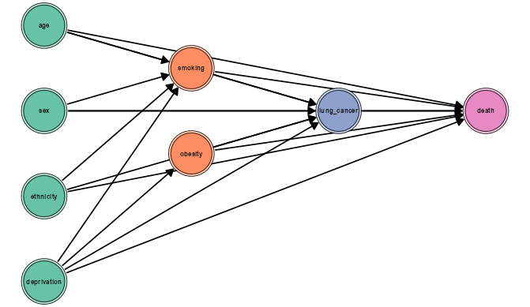
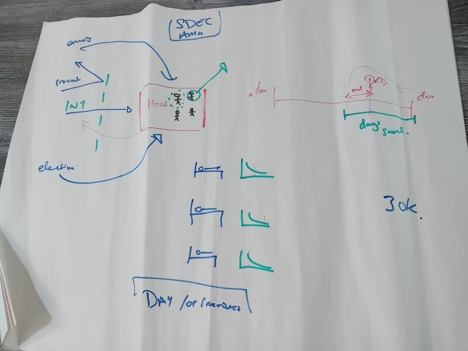
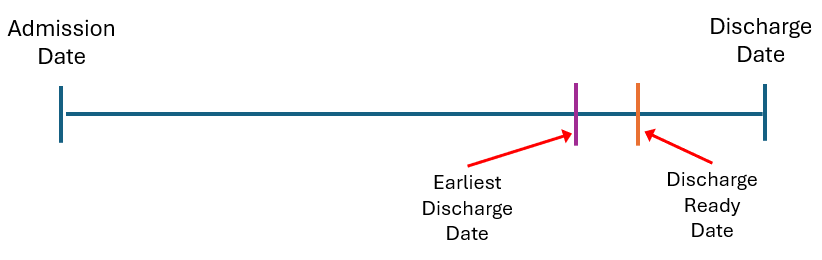
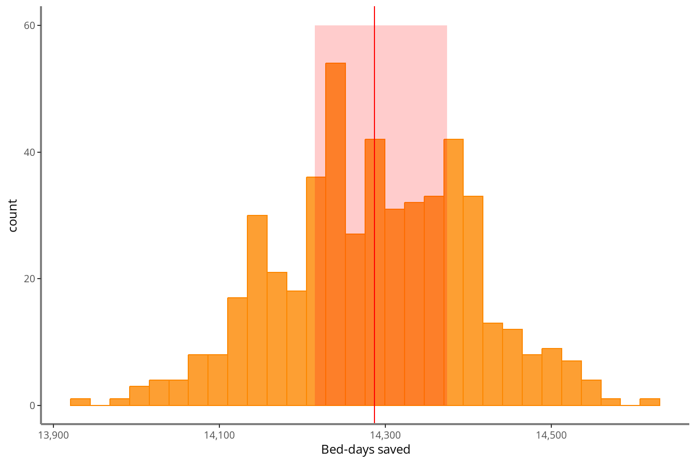

sim_fun <-
function(.data, fraction_effect = 1) {
new_dates <-
as.Date(.data$earliest_discharge_date +
extraDistr::rdunif(nrow(.data),
# Earliest discharge date (EDD)
0,
# No. days EDD actual discharge date
.data$DischargeDate_range))
fraction_effect * as.numeric(sum(.data$DischargeDate - new_dates))
}Using simulation to evaluate a service
Chris Mainey
21 October 2025
Alternative title:
“…what to do when you’ve got no data, no clear questions, and no clue if the service is working…”
What I’ll cover:
A few general thoughts, and a worked example, including:
- Problem structuring
- What is the estimand?
- Building a (simulation) model
Problem structuring
What real is the question?
Complex system, or more direct question?
What are the questions on the way to answering it?
What do we already know?
How could we answer it with a degree of confidence?
Visual methods
- Driver diagram
- Causal loop diagram
- Logic model
- Influence diagram
- Directed acyclic graph (DAG)
- Big bit of paper

Example

What is the estimand?
“The thing we are estimating”
We are often supplied with a pre-determined estimated
- May have questionable link to the real question
Can it be measured directly?
Are there confounders / biases to consider?
Do you need to make any adjustment (sets)?
Building a (simulation) model
Mathematical version of a real-world process
“What would/could out system/question look like?”
Understanding distributions / arrival rates / probabilities is key.
Use this knowledge to create synthetic data
Monte Carlo methods are useful:
- Repeatedly sample from distributions
- Average over many runs.
Ready to go?
Real world application:
Community Care Collaboratives - part of NHS plans to shift care out of hospitals
- Costs and Benefits
- No existing linked data - new service
- Unclear definitions of who is eligible
- No clear counter factual
System had already defined a benefit of 30,000 bed days saved per year
So, is it working?
Problem structuring
- What currently happens?
- What happens in an ideal world?
- What data sources have we got?

Simulate previous fiscal year, to see if it is possible
What is the estimand?
Bed days saved!

We need to randomly assign new discharge dates
So we need to estimate:
- Saving on all eligible patients
- Saving on a proportion of eligible patient
Findings:
- ~50% of patients had zero-day LOS (no bed days to save)
- If all patients made maximum saving: ~28,572 bd
- Simulation on all patients: ~14,287 bd
- Intervention rate is 2%: 286 bd
- With 10-fold increase to 20%: ~2,857 bd
Even being generous, the proposed saving highly unlikley
Implementation in Quarto
- Usual benefits of reproducibility and formats.
- Layout is visually appealing.
- Run the simulation dynamically on build.
- In-line calculations in text.

Final thoughts
Be clear on the questions you are trying to answer
Take time to draw it out and think about it
Not having data is not the end!
What would it look like, according to your best assumptions?